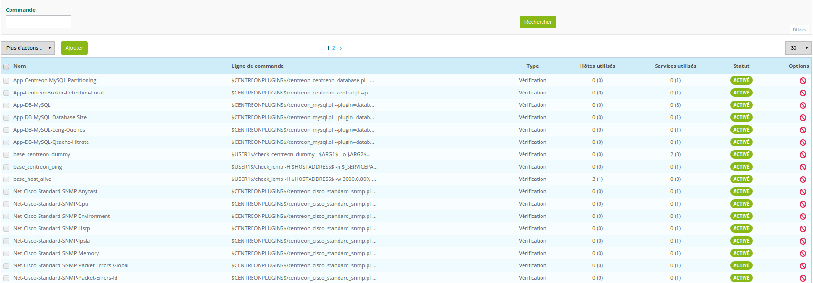

Commands¶
Definition¶
A command is the definition of a line of command which uses a script or an application to perform an action. It is possible execute this command by specifying arguments.
There are three types of command:
- Verification commands are used by the schedulers to verify the status of a host or of a service.
- Notification commands are used by the schedulers to alert the contacts (via mail, SMS, etc.).
- Discovery commands are used by the schedulers to discover some elements on monitored node.
- Miscellaneous commands are used by the additional modules (to perform certain actions), by the scheduler for data processing, etc.
All the commands can be configured in the menu: Configuration ==> Commands.
Adding a command¶
Before adding a command:
- In the left menu select the type of command that you want to add (Checks, Notifications or Miscellaneous).
- Click on Add
Note
The configuration fields of a command are the same regardless of the type of command chosen.
Configuration fields¶
- The command Name field defined the name of the command.
- The Command Type field allows us to choose the type of command.
- The Command Line field indicates the application or the script use with the command.
- The Enable shell box allows us to enable functions that are specific to a shell such as the pipe, etc.
- The Argument Example and $HOSTADDRESS$ fields define examples of arguments (each argument starts with a ”!”) and a test IP address respectively.
These fields serve to execute the command line defined above via the web interface by clicking on the blue arrow :
 .
. - The Describe arguments button serves to add a description to arguments of the “$ARGn$” type. This description will be visible when using the command in a host or service form.
- The Clear arguments button deletes the description of arguments defined
- The Describe macros button serves to add a description to all macros. This description will be visible when using the command in a host or service form.
- The Connectors field serves to link a Connector to the command. For more information on Connectors refer to the chapter entitled: Perl Connector’s documentation and SSH Connector’s documentation.
- The Graph template field serves to link the command to a graphic model.
- The Comment field can be used to make a comment on the command.
Arguments and macros¶
In the Command Line field it is possible to import macros and arguments.
The arguments are used to be able to pass various settings to the scripts called up by the commands. During execution of the command by the scheduler, each of the arguments and macros are replaced by their respective values. Each argument appears in the form $ARGn$ where n is naturel whole number greater than 0.
E.g.: order line using the arguments : $USER1$/check-bench-process-DB -w $ARG1$ -c $ARG2$ -n $ARG3$
Note
Good practice requires replacing the arguments by custom macros.